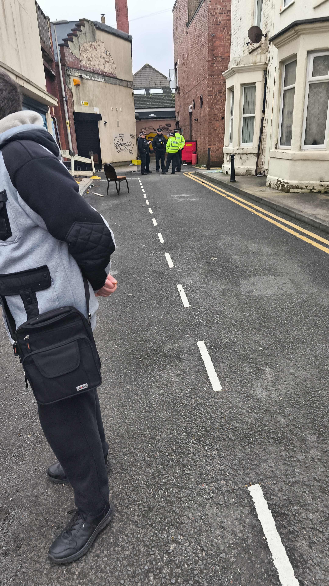

Left in the Dark
This page examines the gaps in communication, security, and support experienced by displaced residents in the weeks following the Waterloo Road fire. It draws on formal correspondence, first-hand observations, and the shared experiences of Gordon Street households.
The Handover Nobody Mentioned
On the night of the fire, residents were evacuated under police instruction and told to leave their front doors unlocked for emergency access. Over the following days, the Lancashire Fire and Rescue Service maintained control of the site.
By approximately February 8, control was handed from the Fire Service to Blackpool Council. Residents were not informed of this transition. Properties that had been left unlocked at the instruction of emergency services were now unsecured, unmonitored, and without any communication to residents about the change in status.
This became a significant complaint. Residents had complied with the instruction to leave doors unlocked on the understanding that the site was under active emergency management. The handover removed that assumption — but nobody told them.


Children on the Demolition Site
On the morning of February 11, Niki personally witnessed children entering the restricted demolition site. Niki immediately reported this to the police and the council, and remained on site until officers arrived to secure the area.
Following this incident, 24/7 security was established on site — with police later confirming five security guards were deployed. But this raised an obvious question: why had the site been left unmonitored in the first place, particularly when residents' homes had been deliberately left unlocked?

Even after security was established, the perimeter remained porous. Niki observed individuals accessing the alleyway and entering the demolition site area, raising concerns about the security of nearby properties.
The Communication Vacuum
Throughout the displacement, one issue compounded every other: the near-total absence of communication from the council to residents. Even local businesses received very little, but the families displaced from Gordon Street were left with almost nothing.
Niki sent formal emails to the council on February 12, 14, and 16 — each requesting a named point of contact, a communication channel for residents, and basic progress updates. Replies were slow or absent. Information that directly affected residents, such as the rear wall collapsing into neighbouring gardens, was not communicated at all.
"I recently became aware via photos shared online that a wall has fallen into my property boundary. I have not been directly informed of this development and therefore do not know what to tell my insurer or how to plan next steps." — Niki Cooke, email to Blackpool Council, February 14, 2026
The council's silence had practical consequences. By February 16, Niki's insurance Loss Adjuster was requesting updates on access in order to extend temporary accommodation and schedule their own structural engineers. Because the council was not keeping residents informed, Niki was unable to provide the answers the insurer needed — creating a deadlock that affected the claim process.
"My insurance Loss Adjuster contacted me this morning specifically asking for an update on access so they can determine whether to extend my temporary accommodation and schedule their own structural engineers. Because the council is not keeping residents informed, I am unable to provide them with the answers they need." — Niki Cooke, email to Blackpool Council, February 16, 2026
Twelve Days of Official Silence
There were community-organised meetings early on — including one on February 11 and another on February 18 where councillors and officials were present. However, residents do not consider these to be official updates because the council made no formal attempt to inform them. Displaced households received no letters, emails, or phone calls inviting them to attend.
Because attendance relied entirely on word of mouth or community Facebook groups, many residents nearly missed these chances to get direct answers. For some, the February 18 meeting — 12 days after the fire — was the first time they managed to get in the same room as decision-makers.
One resident noted:
"I only heard about this meeting from someone who doesn't even live on [the] street." — A resident, Gordon Street
At the meeting, the Director of Community and Environmental Services confirmed that someone from Building Control would phone the following day to provide an update. As of late February, this has not materialised into a formal coordinator or joint communication channel — residents are still waiting for individual calls from Building Control, Housing Options, and other departments. Niki documented the key points:
- Escorted property visits should still be possible when needed
- Police confirmed 5 security guards now on site
- Properties being boarded as required, including back doors
- A DWP walk-in support session was arranged at the Enterprise Centre
- Another community meeting would take place in 2 weeks
When asked about the future of the cleared land, councillors suggested a community green space — and Chris Webb reportedly said he would "chain himself to the front" if anyone tried to make it a car park.
A Pattern of Exclusion
Throughout Niki's correspondence, a recurring theme emerges: businesses were communicated with, residents were not. Council updates were shared with business owners. The Pitstop Café had to push to get loss adjusters onto the site. But the displaced families — spread across temporary accommodation, trying to coordinate with insurers, employers, and schools — had no equivalent channel.
"Throughout this process I have noticed that communication is being shared with local businesses, but residents do not appear to have an equivalent channel. This is the main concern that continues to be raised by multiple households." — Niki Cooke, email to Blackpool Council, February 14, 2026
In the absence of official communication, Niki stepped in — creating a WhatsApp group, drafting template emails, chasing council contacts, and posting meeting summaries publicly. This is documented in detail on the Community page.
The Utility Nightmare
Beyond the council's silence, displaced residents faced a Kafkaesque cascade of administrative problems. With no access to their properties — and therefore no access to post — bills, notices, and demands piled up unseen.
On February 25 — 19 days after the fire — United Utilities sent Niki an email with the subject line: "URGENT – you have an outstanding balance from a previous address." The email warned that if the balance wasn't settled within 10 days, they would "have no option but to start other debt collection activities for the full amount outstanding" — and reminded Niki that the unpaid balance "may now be affecting your credit score."
"We know this may have just slipped your mind but it's really important that you either bring your account up to date or contact us as the status of your account may now be affecting your credit score. [...] Unfortunately if we don't hear from you in the next 10 days, we will have no option but to start other debt collection activities." — Head of Collections, United Utilities, February 25, 2026
The same day, after Niki phoned to explain the situation, United Utilities confirmed in writing that the water account at 4 Gordon Street had been closed as of February 5, 2026 — the day before the fire. They added: "Once it's okay for you to move back into the property, please let us know and we can reactivate your water account." No timeline was offered.
Meanwhile, on February 20, United Utilities had also sent a generic "sorry it's taking us longer than normal to respond" message — an automated acknowledgement of a query Niki had submitted days earlier, still unanswered. Three separate emails from the same utility company, none of them helpful until Niki personally chased them by phone.
This is one utility company, for one resident. Every displaced household on Gordon Street faced similar battles — contacting gas, electric, water, broadband, insurance, and council tax departments individually, explaining the same situation repeatedly, often without the account numbers or documents locked inside their homes.
What Should Have Happened
This is not an attack on the emergency services, who performed their roles under extreme conditions. Nor is it a claim that the council acted with malice. But the experience of Gordon Street residents highlights several areas where the process failed:
- Handover communication: When site control passes from fire service to council, residents should be informed — particularly when their homes have been left unlocked at official instruction.
- Site security: An unsecured demolition site next to unlocked residential properties is a foreseeable risk. Security should not have required a resident to report children on site before being established.
- A named contact: Displaced residents needed one person they could phone. This took 12 days to arrange.
- Regular updates: Even a daily "no change" message would have reduced the distress and allowed residents to communicate with their insurers.
- Parity with businesses: If businesses receive updates, residents should too — they are at least equally affected.
- Utility coordination: A single notification to utility providers confirming displacement would have prevented debt threats, credit score damage, and hours of phone calls by residents who were already overwhelmed.
Niki's closing words in the February 14 email capture the frustration simply:
"We completely understand that there may not always be new developments, but having a reliable communication route would make a significant difference to the stress and uncertainty residents are experiencing." — Niki Cooke, on behalf of affected residents